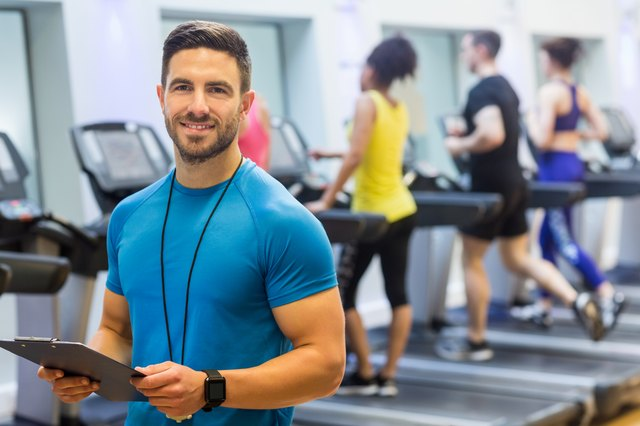
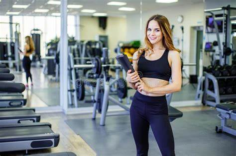
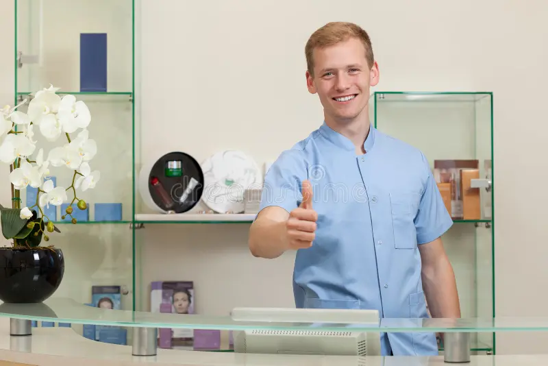

Dr. Fernando Albuquerque
NutricionistaA chave para o bem-estar está em adotar hábitos saudáveis. Uma alimentação equilibrada, rica em frutas, vegetais, proteínas magras e grãos integrais, aliada à prática regular de exercícios físicos, promove saúde mental e física. Beber água, descansar bem e reduzir o estresse também são essenciais. Lembre-se, cuidar da sua saúde é investir no seu bem-estar a longo prazo!.

Adriano Fernandes
Instrutor da AcademiaO bem-estar está intimamente ligado à sua saúde física. Exercitar-se regularmente fortalece músculos, melhora o condicionamento e libera endorfinas, promovendo a sensação de felicidade. Combinado com uma alimentação equilibrada, você alcançará não apenas um corpo mais saudável, mas também mais energia e confiança. Lembre-se, a consistência é a chave para colher os benefícios a longo prazo!
Vitoria Maria
Instrutora da AcademiaAlém de melhorar a forma física, estar saudável também proporciona uma mente mais clara e focada. A atividade física regular ajuda a reduzir o estresse, aumentar a autoestima e promover um sono melhor. Cuidar da sua saúde é um investimento em qualidade de vida, tanto no presente quanto no futuro. Vamos manter o foco e os bons hábitos!.
Dra. Camilla Albuquerque
Medica esportistaComo médica esportista, quero compartilhar a importância de incorporar a prática esportiva em sua vida. O esporte não é apenas sobre competição ou alcançar metas específicas de condicionamento físico; é um estilo de vida que pode melhorar significativamente sua saúde e bem-estar.
Alan Ricardo
RecepcionistaComo recepcionista de nossa academia, todos os dias testemunho a incrível alegria e entusiasmo dos nossos alunos ao praticarem esportes. É verdadeiramente inspirador ver a transformação que ocorre em suas vidas quando se dedicam a um estilo de vida ativo e saudável.
